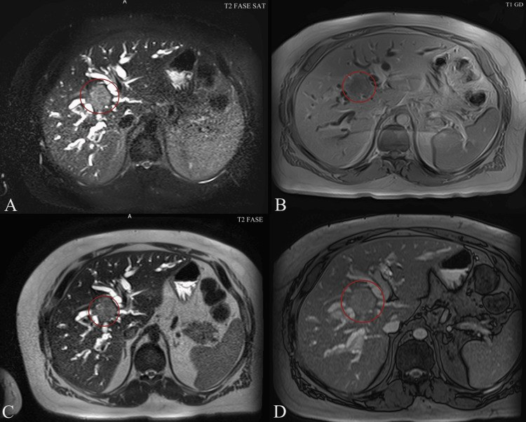
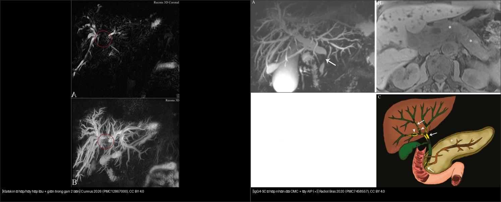
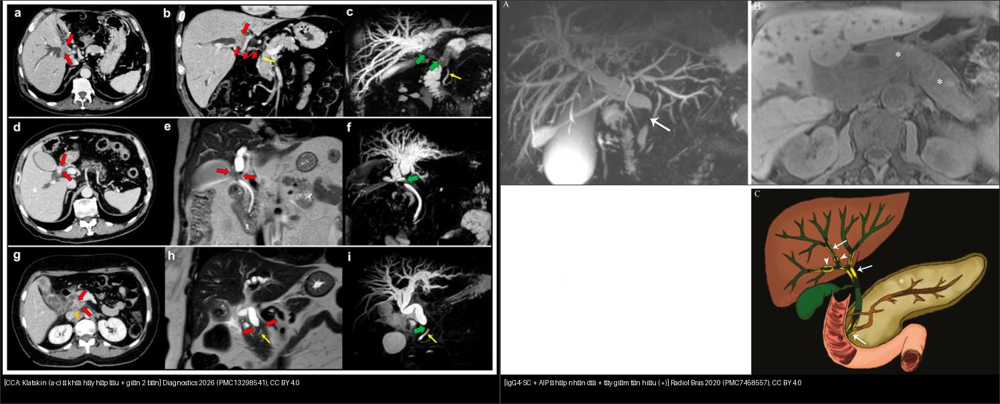
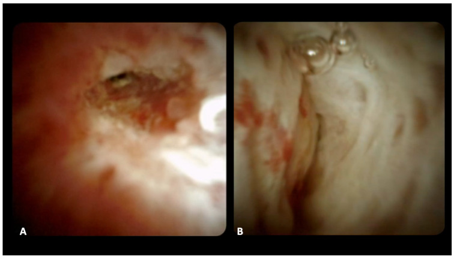
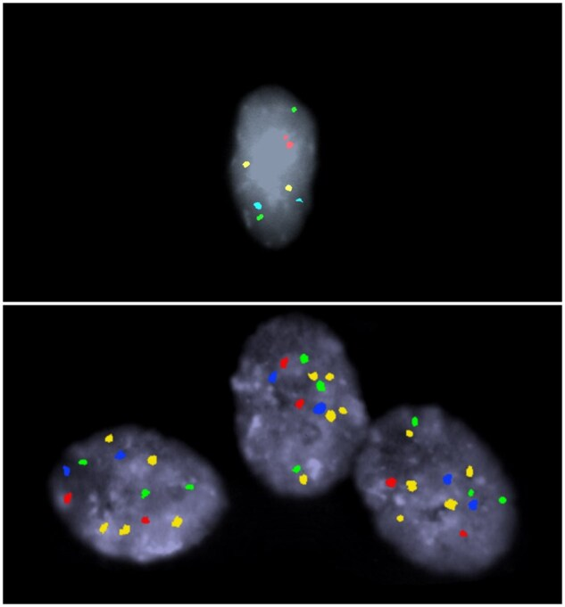
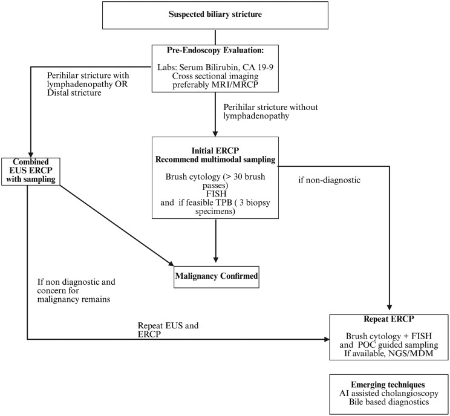
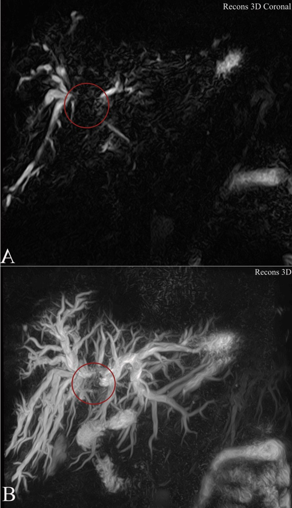
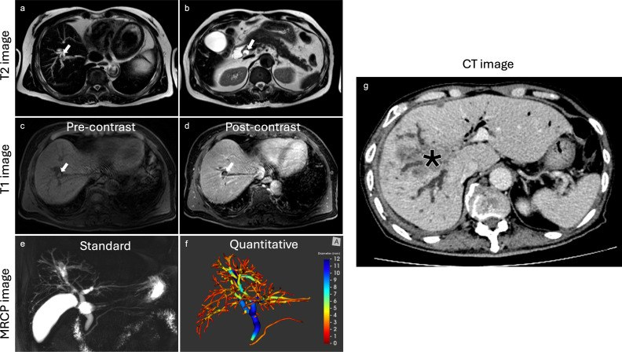

132 — Hẹp đường mật không xác định & vai trò cholangioscopy / Indeterminate biliary stricture
Tags: pattern:hep-duong-mat vung:duong-mat protocol:MRCP protocol:cholangioscopy protocol:EUS-FNA score:IgG4
Mức chắc chắn (certainty): tổng hợp y văn (literature synthesis) — nhóm tự biên từ y văn mở (5 bài CC BY 4.0), các ca minh họa dưới đây là ca nguyên văn giữ đúng chú thích gốc.
1. Tổng quan — "không xác định" nghĩa là gì + ngưỡng định lượng
- Hẹp đường mật không xác định (indeterminate biliary stricture, IBS): hẹp đường mật chưa chốt được bản chất lành/ác sau khi đã có siêu âm + CT + MRI/MRCP ± ERCP chải tế bào lần đầu. Đây không phải một bệnh mà là một trạng thái chẩn đoán — bước tiếp theo (theo dõi, soi sinh thiết, hay mổ) khác hẳn nhau.
- Nguyên tắc vàng (xử trí mặc định): hẹp không xác định phải coi là ÁC cho tới khi chứng minh ngược lại — ~70% trong số đó thực sự là ung thư (cholangiocarcinoma – CCA, hoặc ung thư tụy) [Dumonceau 2020, PMC7298429].
- Nghịch lý "một nửa sự thật": trong một nghiên cứu đa trung tâm 315 bệnh nhân IBS, chẩn đoán mô học được CCA chỉ đạt 14% — nghĩa là phần lớn ca ung thư không có bằng chứng tế bào học đủ mạnh nếu chỉ chải tế bào [PMC9875376].
- Vì sao khó (TẠI SAO hình ảnh không tự chốt): CCA thể xơ hóa (desmoplastic) có rất ít tế bào u nằm rải trong mô đệm xơ dày → chải tế bào/sinh thiết âm giả cao; ngược lại IgG4-SC, PSC, cholangiopathy do thiếu máu cũng xơ hóa → dễ dương giả khi soi. Hình ảnh mặt cắt chỉ đo được hình dạng + ngấm thuốc, không thấy tế bào.
- Ngưỡng định lượng gợi ý ÁC trên MRI/MRCP (Dumonceau 2020, PMC7298429): thành ống dày ≥ 3, 4 hoặc 5 mm; ngấm thuốc mạnh thì động mạch (duct hyperenhancement); hạch cạnh > 1 cm; hẹp dài (long), không đều (irregular), bất đối xứng (asymmetric); có khối; tắc/hủy mạch. Ngược lại, phân bố "bỏ nhảy" (skip lesions) nhiều ổ xen giãn = nghi PSC.
- MRI khuếch tán (DWI) trên bối cảnh u tụy: độ nhạy/độ đặc hiệu 86%/82% cho ung thư tụy (meta-analysis) [PMC7298429].
- Chỉ số định lượng mới: MRCP+ (thể tích cây đường mật) — nghiên cứu 38 ca (23 ác/15 lành): mọi chỉ số ống mật cao hơn có ý nghĩa ở nhóm ác; ca ví dụ có thể tích cây mật 43,8 mL, ban đầu mô học xếp lành, 8 tháng sau tiến triển thành CCA [Eurboonyanun, PMC12088979] — minh chứng "âm giả" có thể trả giá bằng mạng sống.

Cùng ca Klatskin: A/C T2 fat-sat — mật trong gan giãn; B/D T1 sau tiêm — khối ngấm ở rốn gan (vòng đỏ). Cureus 2026, PMC12867000, CC BY 4.0.2. Mẫu hình + chẩn đoán phân biệt theo vị trí hẹp (Gamut)
- Hẹp RỐN GAN (perihilar / hilar): Klatskin (CCA rốn gan) — nặng nhất; IgG4-SC (u giả), PSC (nhiều đoạn), sỏi OMC kẹt hợp lưu, hạch lớn đè. Chốt: hủy/đè hợp lưu + giãn trong gan 2 bên + teo thùy (xem 131).
- Hẹp ĐOẠN XA (distal): ung thư đầu tụy (PDAC) — dấu ống đôi (double-duct) + cắt cụt; CCA đoạn xa; viêm tụy mạn / AIP (tụy giả u + hẹp nhẵn, đáp ứng steroid); sỏi OMC, Mirizzi, viêm nhú (papillary stenosis).
- Hẹp LAN TỎA / nhiều ổ: PSC (skip + beads + viêm ruột), IgG4-SC, cholangiopathy thứ phát (sau ghép/thiếu máu động mạch gan, sau đặt stent, sau xạ, AIDS cholangiopathy).
- Nguyên nhân LÀNH thường gặp: sau cắt túi mật (nhất là mổ nội soi — tổn thương ống mật), sau ghép gan (hẹp miệng nối/cholangiopathy thiếu máu), viêm tụy mạn/AIP, PSC, IgG4-SC, viêm đường mật tăng bạch cầu ái toan (eosinophilic cholangitis), lao hạch, sỏi.
- Gợi nhớ theo 3 câu hỏi: (1) Vị trí (rốn/xa/lan tỏa)? (2) Có khối/ngấm/hạch không (nghi ác)? (3) Có bối cảnh lành (sau mổ/ghép/IBD/đáp ứng steroid) không?
3. Bảng so sánh phân biệt (ma trận đối chiếu)
| Thực thể (entity) | Hình ảnh điển hình | Chốt vào (rule-in) | Chốt loại (rule-out) | Gợi ý xác nhận |
|---|---|---|---|---|
| Klatskin / CCA (ác) | Hẹp hủy hợp lưu, bờ vai, giãn trong gan 2 bên, teo thùy, ± khối | Thành ≥ 3 mm + ngấm mạnh + hẹp bất đối xứng + hạch > 1 cm | Hẹp nhẵn đều + nhiều đoạn xen giãn (skip) + IBD → nghi PSC | MRCP+MRI DWI/DCE, cholangioscopy + sinh thiết, CA19-9 |
| PDAC (ác, xa) | Khối giảm ngấm đầu tụy + double-duct + cắt cụt ống tụy | 2 ống cùng tắc (double-duct) + phù quanh + hạch | Chỉ mật hẹp đơn thuần → nghĩ CCA/sỏi | EUS-FNA (Se cao), DWI 86%/82% |
| PSC (lành) | Nhiều đoạn hẹp xen giãn "chuỗi hạt" (beads), bỏ nhảy | Nhiều ổ + IBD + không khối | Hẹp đơn độc tại hợp lưu + khối → nghĩ CCA | MRCP; hẹp "trội" MỚI → nghi CCA |
| IgG4-SC (lành, u giả) | Hẹp nhẵn liên tục, thành dày đồng tâm, ± tụy "xúc xích" | IgG4 ≥ 135 mg/dL + tổn thương nhiều tạng + hẹp LIÊN TỤC | Hẹp bỏ nhảy + IBD → PSC; khối + ngấm mạnh → CCA | Corticosteroid thử; CBD > 2,5 mm, GB dày |
| Cholangiopathy thiếu máu / sau mổ (lành) | Hẹp tại miệng nối/đoạn rốn gan sau ghép, sau cắt túi mật | Tiền sử ghép/cắt túi mật + vị trí điển hình | Có khối/teo thùy/ngấm mạnh → nghĩ ác | MRI + cholangioscopy theo dõi |
| Eosinophilic cholangitis (lành) | Hẹp nhẵn, thành dày, tăng bạch cầu ái toan máu | Bạch cầu ái toan tăng + đáp ứng steroid | Tăng BC ái toan không đáp ứng + tiến triển → CCA | Công thức máu, sinh thiết |
| AIP type 1 (lành) | Tụy phì đại khu trú/lan tỏa + hẹp OMC dài | Tụy "xúc xích" + hạch + IgG4 cao + đáp ứng steroid | Không đáp ứng steroid → nghi PDAC | MRI/HISORt/ICDC |

Trái: Klatskin — hủy hợp lưu (vòng đỏ) + giãn trong gan 2 bên (PMC12867000). Phải: IgG4-SC — hẹp nhẵn dài OMC (mũi tên trắng) + tụy AIP giảm tín hiệu () (PMC7458557). Cả hai CC BY 4.0. Ảnh ghép letterbox.*
Trái: 3 ca CCA (a–c Klatskin hủy hợp lưu; d–f và g–i đoạn xa) — CT + MRI + MRCP (Diagnostics 2026, PMC13298541). Phải: IgG4-SC + AIP — hẹp nhẵn dài + tụy giảm tín hiệu T1 (Radiol Bras 2020, PMC7458557). Cả hai CC BY 4.0.Nhìn TRỰC TIẾP bằng cholangioscopy — tiêu chuẩn hình thái
- Ác: (1) mạch máu bất thường ("tumor vessels") — mạch xoắn, giãn, không đều, dễ chảy máu; (2) niêm mạc đỏ, loét, dễ chảy máu; (3) cấu trúc nhú dạng chùm nho (lobulated papillary/grape-like) có mạch máu nhìn thấy [PMC10836894].
- Lành: niêm mạc nhẵn, trắng, xơ hóa, không tăng sinh mạch.

DSOC: (A) niêm mạc không đều + mạch máu giãn bất thường = ác; (B) niêm mạc nhẵn trắng xơ = lành. Diagnostics 2024, PMC11240807, CC BY 4.0.
Trên: tế bào lành — dị bội (2 bản sao/locus). Dưới: tế bào ác — đa bội (nhiều bản sao tại nhiều locus). Gastroenterol Rep 2026, PMC13318222, CC BY 4.0.4. Protocol + phân tầng + flowchart
- Bước 1 — Hình ảnh mặt cắt (không xâm lấn): MRI/MRCP là xét nghiệm nền tảng (mọi ca IBS trong nghiên cứu đa trung tâm đều được chỉ định) [PMC9875376]: cần MRCP + T2 + DWI + DCE 3 thì. Đọc thành ống ≥ 3 mm, ngấm mạnh, hạch > 1 cm, hẹp dài/bất đối xứng, khối; hỏi thể tích cây mật (MRCP+) — cao hơn ở nhóm ác (ca lâm sàng 43,8 mL tiến triển CCA sau 8 tháng) [PMC12088979].
- Bước 2 — Xét nghiệm máu: CA19-9 (thường tăng nhẹ do ứ mật, có thể âm giả ở người Lewis a-b) — tăng rất cao mới gợi ung thư tụy [PMC13298541]; IgG4 ≥ 135 mg/dL + tổn thương nhiều tạng gợi IgG4-RD.
- Bước 3 — ERCP lấy bệnh phẩm (đa phương thức): chải tế bào > 30 lần chải (brush passes) + FISH (phát hiện đa bội/CNV) + sinh thiết qua nội soi (transpapillary biopsy) [PMC13318222]. Độ nhạy còn hạn chế: chải tế bào 23–56%, sinh thiết qua ống 33–65% [PMC10836894]; gộp sinh thiết forceps qua ERCP Se 48,1%/Sp 99,2% [PMC12138359] — âm KHÔNG loại trừ ác.
- Bước 4 — Cholangioscopy trực tiếp (DSOC/SpyGlass) ± IDUS: cho nhìn + sinh thiết đích. Trong 57 ca IBS: độ chính xác DSOC 89,5% và IDUS 82,7%, cao hơn hẳn chải tế bào 61,5% (p < 0,05) [PMC11240807]. Gộp hình ảnh POCS: Se 93% (88–96), Sp 86% (75–92) cho hẹp ác [PMC12138359]. AI hỗ trợ (84.994 ảnh/129 ca): chính xác 82,9%, Se 83,5%, Sp 82,4%, AUROC 0,92 [PMC10571941].
- Bước 5 — EUS-FNA: ưu tiên hẹp đoạn xa + hạch/khối; kết hợp EUS + ERCP khi hẹp rốn gan có hạch hoặc hẹp đoạn xa [PMC13318222].
- Bước 6 — Nếu vẫn không xác định: hội chẩn đa chuyên khoa → phẫu thuật (mổ cắt/hạch) hoặc theo dõi. Lưu ý: ~70% ca là ác, nhưng vẫn có một tỉ lệ mổ oan vì lành tính — cân nhắc kỹ ở ca hẹp trơn nhẵn, không khối.

Thuật toán: MRI/MRCP trước; ERCP lấy bệnh phẩm đa phương thức (chải > 30 lần + FISH + TPB); nếu không chẩn đoán → lặp lại EUS/ERCP/soi đích (POC guided sampling) + NGS/MDM. Gastroenterol Rep 2026, PMC13318222, CC BY 4.0.flowchart TD
A[Vàng da ứ mật + hẹp đường mật] --> B[Siêu âm + CT + MRI/MRCP]
B --> C{Hẹp KHÔNG xác định?}
C -->|Không: đã rõ sỏi/khối/viêm tụy| Z[Xử trí theo nguyên nhân: 131/136]
C -->|Có| D[Máu: CA19-9, IgG4, bạch cầu ái toan]
D --> E{IgG4 cao + nhiều tạng + hẹp nhẵn liên tục?}
E -->|Có| F[Thử corticosteroid + theo dõi MRI; loại trừ ác]
E -->|Không| G[ERCP: chải >30 lần + FISH + sinh thiết]
G --> H{Chẩn đoán ác?}
H -->|Có| I[Mổ/u hóa-xạ theo giai đoạn: 131]
H -->|Không/không đủ| J[Cholangioscopy DSOC ± IDUS + sinh thiết đích]
J --> K{Mạch máu bất thường/nhú chùm nho?}
K -->|Có| I
K -->|Không, niêm mạc nhẵn| L[EUS-FNA nếu đoạn xa/hạch]
L --> M{Vẫn không xác định}
M --> N[Hội chẩn đa chuyên khoa: mổ hay theo dõi MRCP 3 tháng]
5. Cạm bẫy
- CA19-9 tăng nhẹ do ứ mật/viêm đường mật — đừng mổ vì một con số; tăng rất cao mới đáng nghi ung thư tụy [PMC13298541].
- IgG4-SC giả Klatskin: hẹp nhẵn, liên tục, tổn thương nhiều tạng, đáp ứng steroid — thử steroid trước khi mổ triệt căn (ống mật > 2,5 mm, dày thành túi mật, tụy AIP kèm) [PMC7298429].
- PSC: hẹp "trội" MỚI (dominant stricture) ở bệnh nhân PSC = phải nghi CCA cho tới khi loại trừ — sinh thiết/chải dù độ nhạy thấp.
- Hẹp lành sau mổ: sau cắt túi mật (tổn thương ống gan phải cắm thấp) và sau ghép gan (miệng nối/cholangiopathy thiếu máu động mạch gan) — hỏi tiền sử, đừng chốt ác.
- Bệnh phẩm âm không loại trừ ác: chải tế bào/sinh thiết âm vì tế bào u ít trong mô đệm xơ; FISH/đa bội giúp tăng độ nhạy [PMC13318222].
- Cholangioscopy dương giả: viêm, sỏi, sau đốt RFA/brachytherapy/xạ có thể trông "không đều như ung thư" — kết hợp hình thái + sinh thiết đích.
- Hẹp do lành tính vẫn có thể teo thùy (tắc lâu) — teo thùy không đồng nghĩa ung thư, nhưng tăng nghi ngờ CCA.
6. Tự lượng giá — Blind Quiz
Ca 1 — MRCP: hủy tại hợp lưu gan, giãn mật trong gan 2 bên. Mô tả trước khi xem đáp án.

- Hỏi: tổn thương ở đâu? Bismuth? Bước tiếp theo là gì?
Bấm để hiện đáp án (findings + chẩn đoán)
- Findings: MRCP 3D coronal — giãn/hủy hợp lưu rốn gan (vòng đỏ) + giãn mật trong gan hai bên; khối không thấy rõ trên 3D.
- Chẩn đoán: Klatskin (CCA rốn gan) type IIIa — ước tính Bismuth-Corlette, cần MRI đa thì (DWI/DCE) + hạch/mạch.
- Bước tiếp: cholangioscopy/sinh thiết đích hoặc hội chẩn mổ, tùy giai đoạn. Nguồn: Cureus 2026, PMC12867000, CC BY 4.0.
Ca 2 — Bệnh nhân ứ mật, tụy phì đại lan tỏa, không khối đổ mồ hôi. MRI/MRCP nào lành, cái nào ác?
- Hỏi: bên nào ác? Vì sao? Xét nghiệm máu giúp gì?
Bấm để hiện đáp án (findings + chẩn đoán)
- Trái — CCA: khối/hủy hợp lưu (a–c), hẹp đoạn xa + hạch (d–i), ngấm mạnh, bờ vai. Phải — IgG4-SC + AIP: hẹp nhẵn liên tục OMC + tụy "xúc xích"/giảm tín hiệu T1 (*).
- Chốt: kèm bệnh tụy AIP + IgG4 ≥ 135 mg/dL + đáp ứng steroid = IgG4-SC; khối + hạch > 1 cm + hẹp bất đối xứng = CCA. Nguồn: PMC13298541 + PMC7458557, CC BY 4.0.
Ca 3 — Cholangioscopy trong "hẹp không xác định": nhìn thấy gì thì chốt ác?
- Hỏi: khác biệt giữa A và B? Sinh thiết đích có thay thế hình thái không?
Bấm để hiện đáp án (findings + chẩn đoán)
- (A) Ác: niêm mạc không đều + mạch máu giãn bất thường (tumor vessels) → dễ chảy máu. (B) Lành: niêm mạc nhẵn trắng xơ.
- Chốt: hình thái DSOC chính xác 89,5% (cao hơn chải tế bào 61,5%); nhưng vẫn phải sinh thiết đích vì hình thái đơn thuần có dương giả (viêm/sau xạ). Nguồn: Diagnostics 2024, PMC11240807, CC BY 4.0.
Ca 4 — "Hẹp không xác định" đã chải tế bào âm 2 lần, mô học ban đầu xếp LÀNH, thể tích cây mật 43,8 mL. Theo dõi thế nào?

- Hỏi: cái gì "không khớp"? Sai lầm cần tránh?
Bấm để hiện đáp án (findings + chẩn đoán)
- Bối cảnh: ca được mô học ban đầu xếp lành và báo cáo hình ảnh lành, nhưng thể tích cây đường mật 43,8 mL (cao) — 8 tháng sau tiến triển thành CCA.
- Bài học: âm giả ở hẹp không xác định rất nguy hiểm — cần theo dõi sát (MRI 3 tháng) và dùng chỉ số định lượng (MRCP+) làm còi báo; đừng đóng ca chỉ vì một lần sinh thiết âm. Nguồn: Front Oncol 2025, PMC12088979, CC BY 4.0.
Bài liên quan chéo
- 100 – Tổng quan hệ Bụng
- 131 – Tắc mật: sỏi OMC, Klatskin & xơ hóa (bước trước: chẩn đoán tắc + sỏi/klatskin)
- 130 – Túi mật (sỏi túi mật, Mirizzi, adenomyomatosis)
- 136 – U/nang tụy (double-duct PDAC)
- 121 – LI-RADS & HCC (khối gan/hạch)
Ảnh
- Xem
images/CREDITS.md. Ảnh bài này đều CC BY 4.0 → được phép ghép letterbox (composite) kèm attribution.
Không dùng để chẩn đoán độc lập khi chưa có người hướng dẫn.